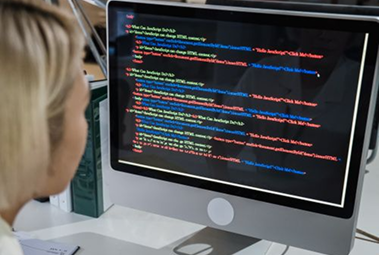
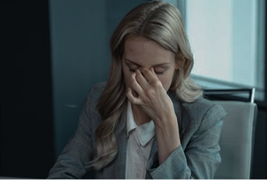
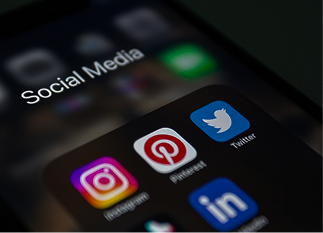
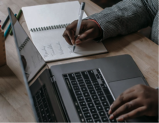
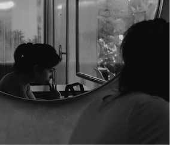

-

-

IMPACTOS DO USO EXCESSIVO DE TELAS
O uso excessivo de telas, como celular, computador, televisão e tablet, pode trazer diversos prejuízos para a saúde física e mental. Um dos principais impactos acontece no sono, devido ao funcionamento da melatonina, hormônio responsável por preparar o corpo para dormir. Durante o dia, a exposição à luz inibe sua produção, mantendo o corpo alerta; ao anoitecer, com a redução dos estímulos luminosos, a retina envia sinais ao cérebro para iniciar a secreção do hormônio, sinalizando que é hora de descansar. O dano acontece em função do retardamento desse hormônio, já que a luz do celular confunde o cérebro e faz com que ele ache que ainda é dia.
Além disso, o uso de redes sociais, jogos e outras atividades digitais deixa a mente mais estimulada, dificultando o relaxamento. Mesmo quando a pessoa consegue dormir, a qualidade do sono pode ser pior, com menos tempo nas fases mais profundas e restauradoras, o que faz com que ela acorde cansada e sem disposição.
O PESO DO EXCESSO NA SAUDE MENTAL E NO FOCO
O excesso de tempo em frente às telas também afeta a saúde mental, a concentração e a produtividade. A comparação constante com a vida de outras pessoas nas redes sociais pode diminuir a autoestima e aumentar sentimentos de ansiedade e tristeza. Ao mesmo tempo, o grande volume de informações recebido diariamente sobrecarrega o cérebro e pode causar cansaço mental. As notificações frequentes e o hábito de alternar entre várias atividades dificultam a concentração e reduzem a capacidade de manter o foco por longos períodos. Como resultado, muitas pessoas acabam procrastinando tarefas importantes, buscando distração nas redes sociais, o que prejudica o desempenho nos estudos, no trabalho e nas atividades do dia a dia.
-

-

-
